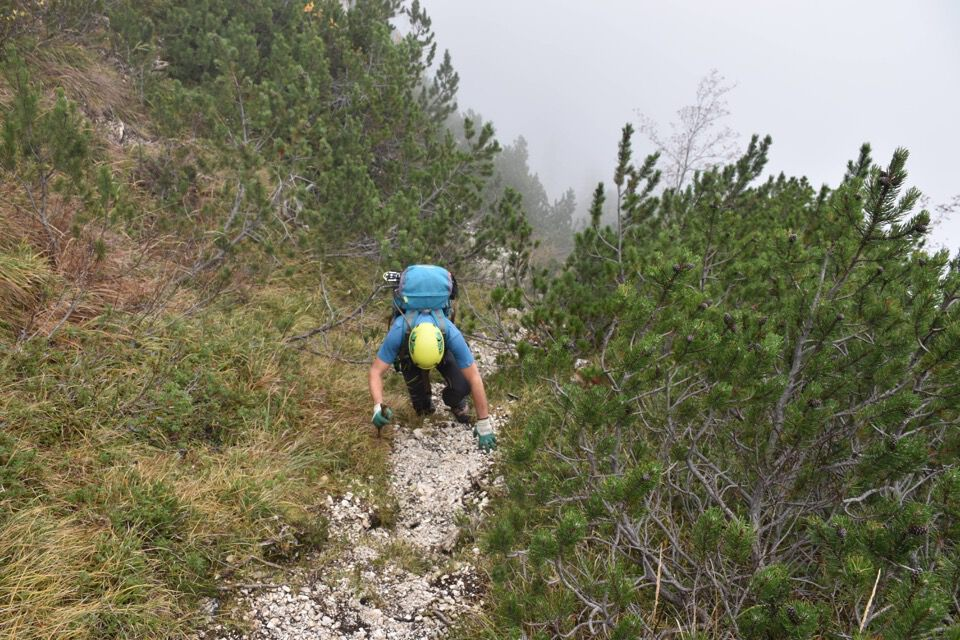
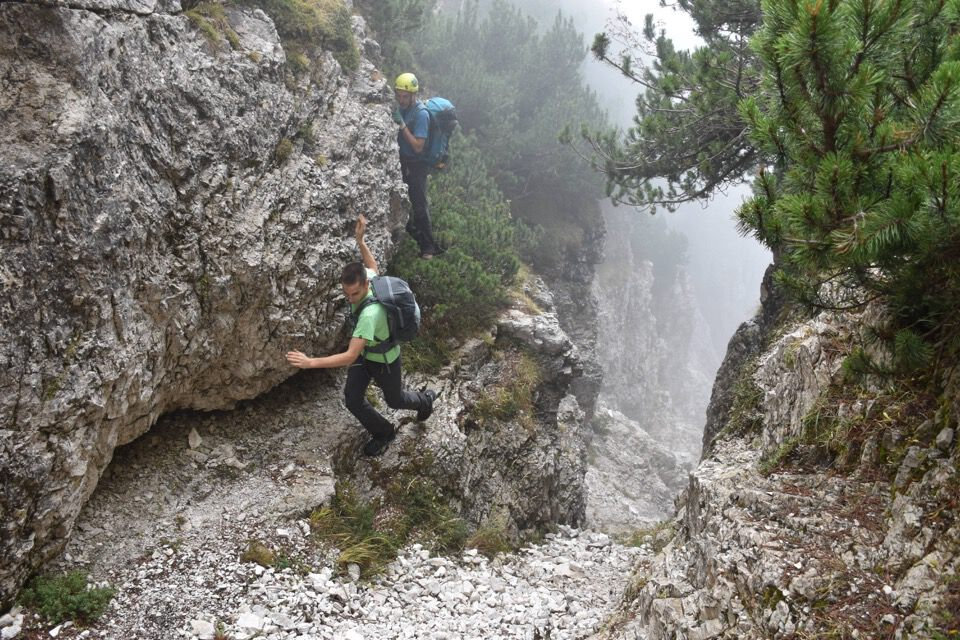

Soddisfazione immensa nel percorrere questo itinerario, assolutamente allo stato originario e senza alcun segno umano, che stava nei pensieri di A. Armellini ormai da decenni: merito suo per la grande intuizione, io ho avuto l'onore di completare l'opera dimostrando che la cosa è davvero fattibile, riuscendo a sbucare sul mugoso spallone Nord-Est dello Jôf di Misdì dove inizia il tratto più bello della leggendaria Sèmide dai Agnèi.
C'erano pochi dubbi, ma finché non si va non si sa: ci siamo proprio divertiti, seguendo fedelmente le tracce degli ungulati che qui vi hanno tracciato parecchi dei loro elitari sentieri.
7h15 dal fondo della val Dogna alla Forca de la Puartate.
Ci ha toccato guadare il Dogna in mutande in piena notte ma almeno siamo passati, cosa che non era ovvia dopo tutte queste piogge; idem per il rio Sfonderât.
Iniziamo a salire su per Granvalt: seguire la vecchia traccia è un esercizio difficile.

Laggiù dobbiamo andare.
Antichi segni umani in luoghi incredibili, qui fra Granvalt e Cjalderatis.
Il mitologico vallone Cjalderatis: toponimo forse perso dalla memoria popolare, ma citato da niente po' po' di meno che V. Dougan nella sua Guida al Gruppo del Montasio (1932).
Il luogo è di una bellezza unica; sembra di essere vicinissimi ai borghi della val Dogna ma allo stesso tempo di essere fuori dal mondo.
Sotto al paretone ci facciamo guidare dai camosci che qui vi hanno marcato un ottimo sentiero...
...peccato che quelle bestiacce ci fanno attraversare un rio proprio sull'orlo di un salto in piena esposizione! Riccardo, che in questi terreni si muove come un camoscio, ci lancia una corda.

Comunque è un divertimento, cerchiamo la nostra strada seguendo i punti più facili.
I due enormi larici isolati sulla costa mugosa principale: ottimo punto di riferimento.
Nella parte alte la via dei camosci è un'autostrada.
La cengetta che segna l'arrivo alla Sèmide dai Agnèi: è fatta, che gioia!
Visioni mistiche lungo la Sèmide dai Agnèi.
Lassù, come un miraggio, la Forca de la Puartate.
Non c'è bisogno di descrizioni.
Indeciso sul da farsi, iniziamo a scendere per Sbrici che è il percorso più semplice, sebbene non il più breve.
Mica scemo Paolo! Un volo e via!
Io e Riccardo optiamo a questo punto per il Rop, visto che per Sbrici sono già passato tante volte.
Quello del Rop è un sentiero di bestie spaventosamente ripido che avevo già percorso anni fa.
I rilassanti prati che dal Rop portano alla Puartate, da cui siamo scesi.
Incredibili cenge: non sperate di scoprire nulla di nuovo però.
Decidiamo di fare qualche deviazione (d'altronde anche per questo volevo scendere per il Rop): il gesto di Riccardo indica bene lo stupore che abbiamo provato!
Dal Rop partono incredibili tracce in varie direzioni: c'è tutto un mondo lì dentro.
Questa bellissima grotta-cascata non penso che l'abbiano vista in molti.
La cengia della salvezza: quando in giugno dopo la Sèmide scendemmo lungo quello che a oggidì è il miglior itinerario per Sbrici (cit. A. Armellini) e ci trovammo a scendere una ertissima pala di pini all'apparenza piena di salti, adocchiai questa cengia come via di fuga per una eventuale ritirata, senza dover tornare su fino all'ex stavolo.
Non può che essere questo il Rio della Scala: che i cartografi abbiano combinato un pasticcio?
Verso Sbrici, con evidente la ripida pala di pini sopramenzionata.
Contrasti che solo qui, ahimé, si hanno.
Il Cuel dai Sbrici, che custodisce ancora i resti degli antichi stavoli sulla sua sommità, luogo che ho visitato con Kelen lo scorso febbraio.
E ora giù a Patoc: grazie Pete!